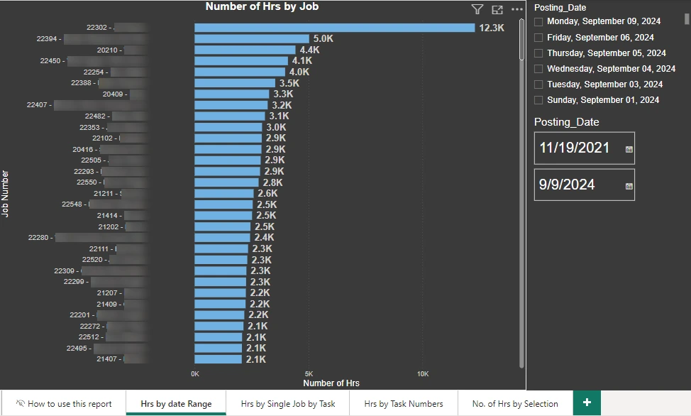
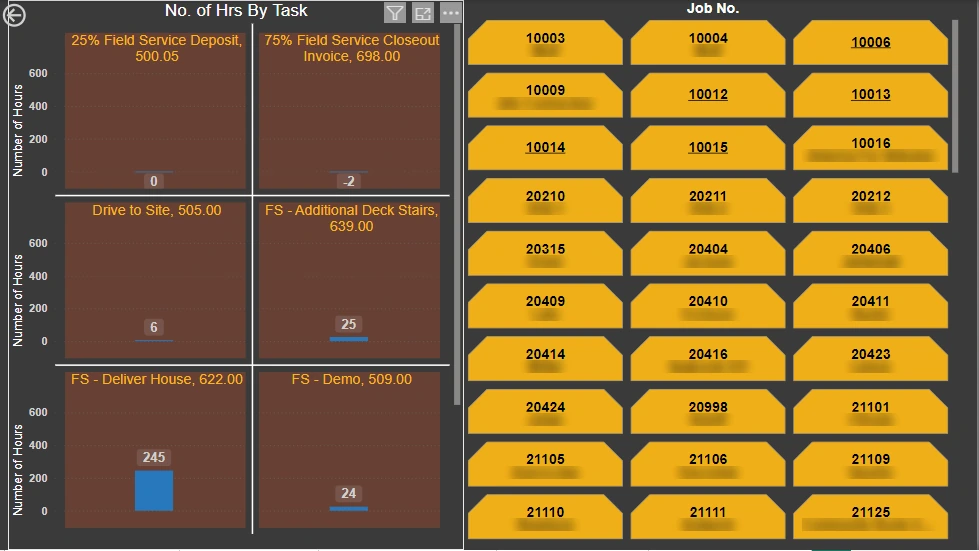
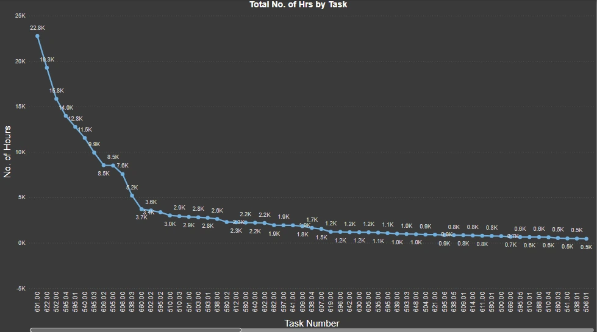
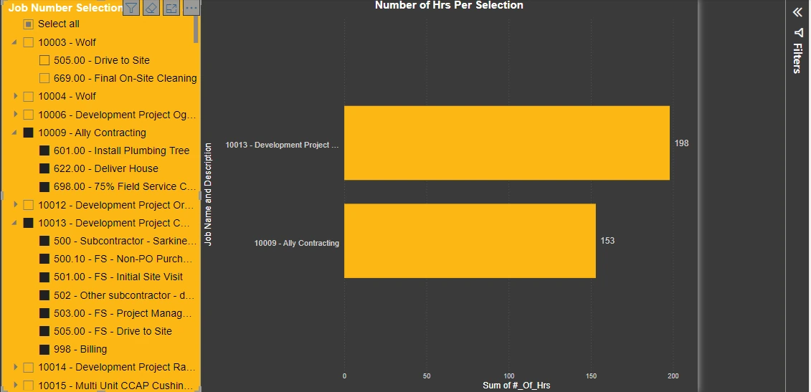

Power BI · Business Central job ledger · Wolf Industries
Approach highlighted
Built for people who don't use Power BI. The report opens on a plain-language guide to every page, and each page answers one question about where labor hours are going.
Project Summary
Every payroll hour posted to a job in Dynamics 365 Business Central lands in the job ledger with a job, a task and a posting date. This report reads the job ledger entries and job task lines to show which jobs and tasks consume the most labor, and how the hours on a task compare from one job to another, for any date range.

Four Questions, Four Pages



A Detail That Mattered
Hours appear by posting date, and most postings land on Wednesday, because that's when payroll posts the previous week ending Sunday. The guide page explains this so nobody reads a Wednesday spike as a Wednesday workload, and shows users how to drill into the rows behind any bar and export them to Excel.
Skills Demonstrated
Power BI Desktop with Business Central data, date slicers, button and hierarchy slicers, small multiples, drill-through to underlying rows, report navigation, and user documentation written for non-technical readers.
More Power BI reports